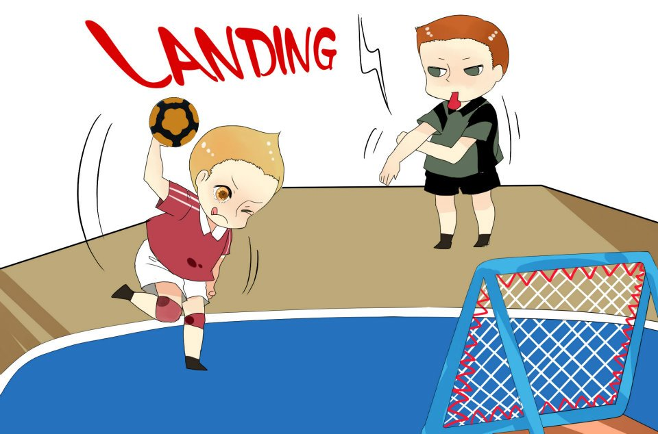

Tchoukball
Cuando se creó y quién lo invento
Este juego se creó en 1970 por el biólogo Hermann Brandt
Cuando se pitan las faltas:
1.Cuando se desplaza driblando con la pelota en el suelo o en el aire.
2.Hace más de 03 (tres), pasa con la posesión de la pelota.
3.Se juega con los miembros inferiores, es decir, por debajo del nivel de la cintura.
4.Él hace el cuarto pase a favor de su equipo.

5.Se pone en contacto con el suelo fuera de los límites del terreno de juego o de la zona prohibida (área), en posesión de la pelota.
6.Deja que la bola caiga en el acto de un pase o recepción.
7.Se intercepta voluntariamente (o no), un pase del otro equipo.
8.Se toma el balón después de la finalización de un compañero de equipo.
9.Se obstruye el desplazamiento del adversario o la libre trayectoria de la pelota cuando ésta está sobre la posesión del adversario.
Deportes que se utilizaron para armar el Tchoukball:
1.Balon Mano.

2.Baloncesto.

3.Fútbol.